| Catalog | overS0_05 |
|---|---|
| Author | Jaqcui Gilchrist, 2018/09/27 |
| Description | stress overshoot: overshoot=0.05 |
| Fault/Def Model | Fault Model 3.1, Geologic |
| Slip Velocity | 1.0 m/s |
| Average Element Area | 1.35 km^2 |
| Length | 6,463,999 events in 324,425 years |
| Frictional Params | a=0.001, b=0.008, (b-a)=0.007, ddotEQ=1 |
| Scatter | 2-D Hist |
|---|---|
 |  |
| Scatter | 2-D Hist |
|---|---|
 |  |
| Scatter | 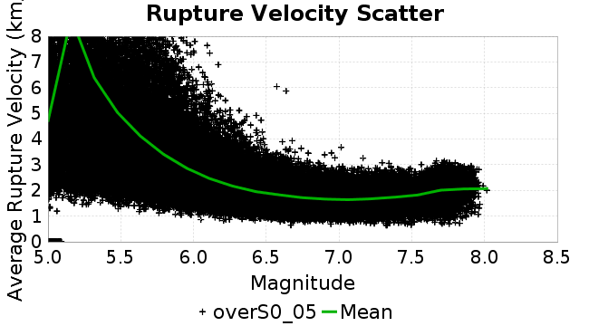 |
|---|---|
| Distance/Velocity |  |
| M≥6 | M≥6.5 | M≥7 | M≥7.5 |
|---|---|---|---|
 | 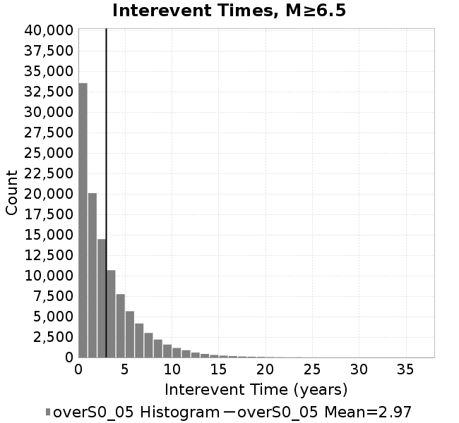 |  | 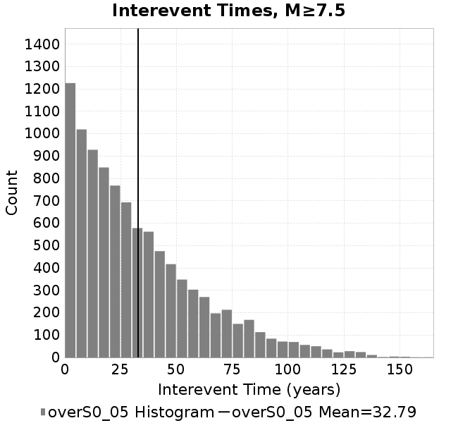 |
| M≥6 | M≥6.5 | M≥7 | M≥7.5 | |
|---|---|---|---|---|
| Elements |  | 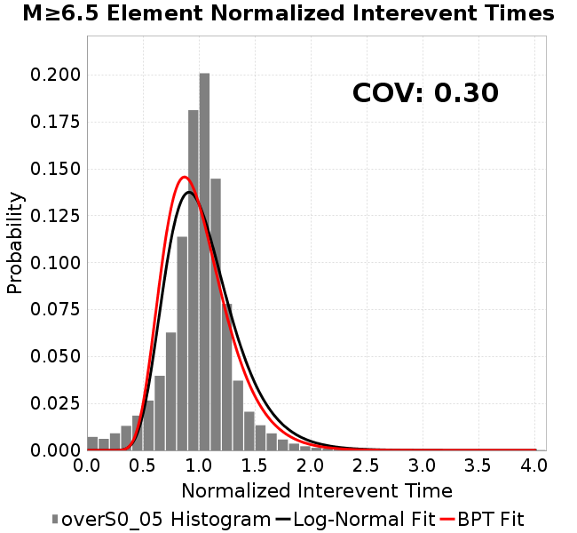 |  |  |
| Subsections |  |  |  | 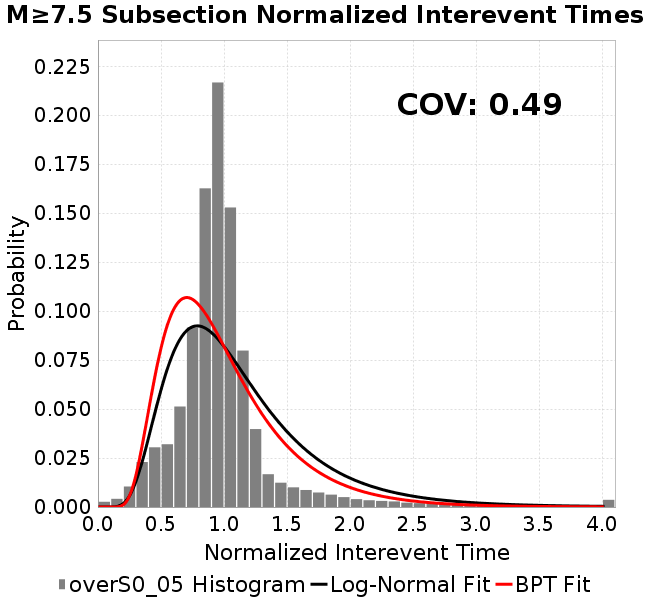 |
| Sections | 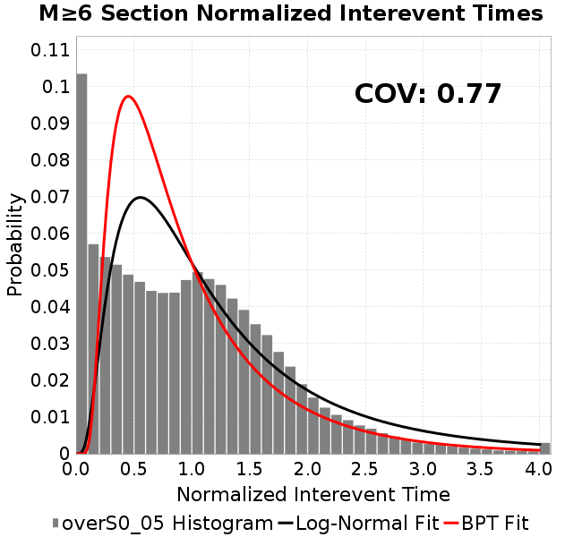 | 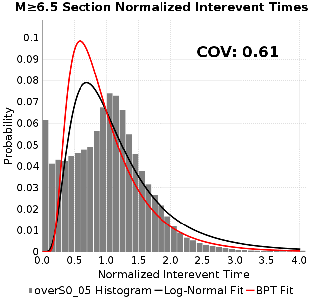 |  |  |
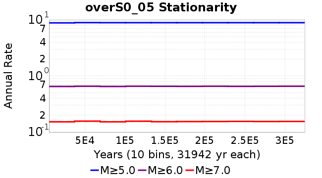
| Min Mag | Scatter | 2-D Hist |
|---|---|---|
| M≥6.0 | 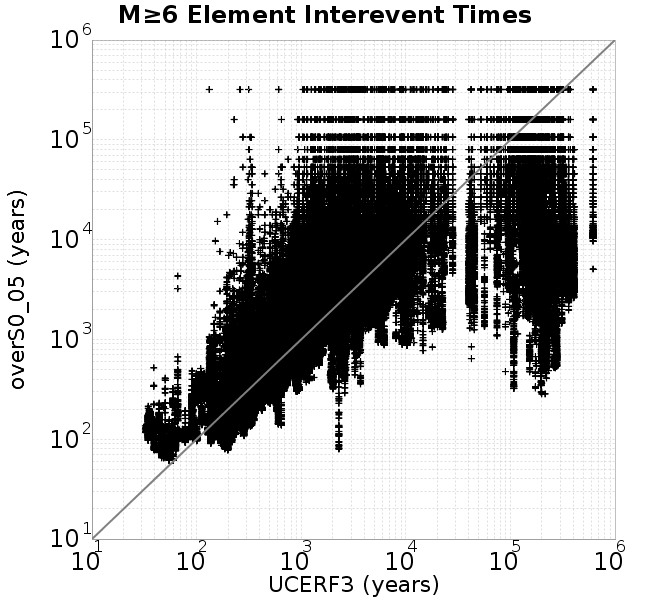 | 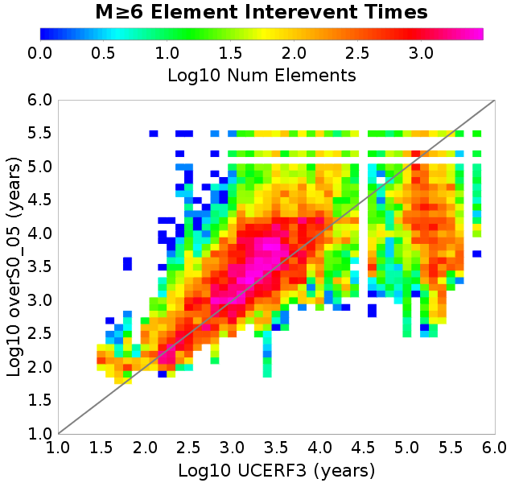 |
| M≥6.5 |  | 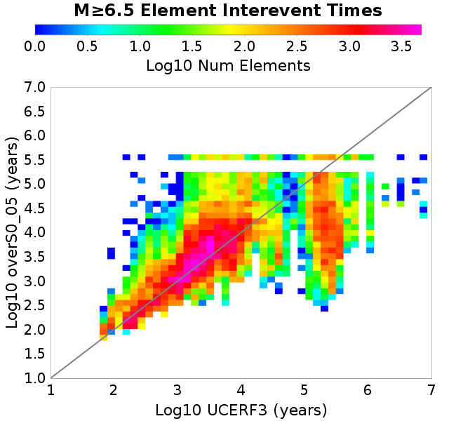 |
| M≥7.0 |  |  |
| M≥7.5 | 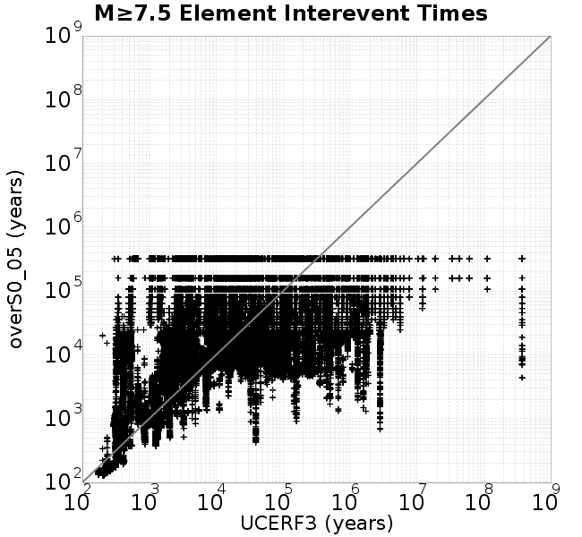 |  |
Subsections participate in a rupture if at least 20.0 % of its area ruptures
| Min Mag | Scatter | 2-D Hist |
|---|---|---|
| M≥6.0 |  |  |
| M≥6.5 |  | 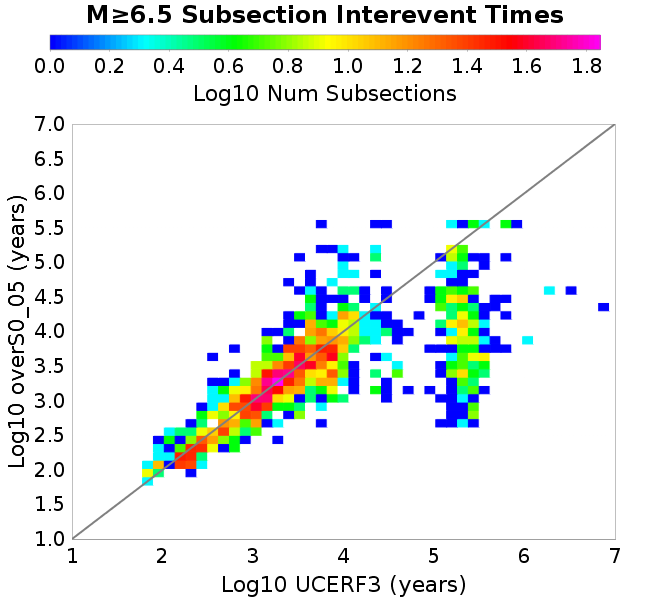 |
| M≥7.0 | 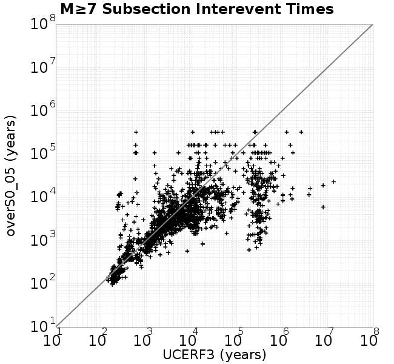 |  |
| M≥7.5 |  | 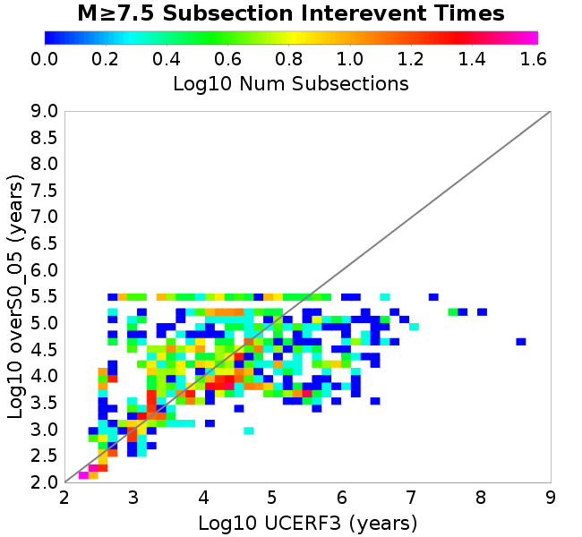 |
These plots use the 5 paleoseismic sites identified in Biasi & Scharer (2019) on the Hayward, N. SAF, S. SAF, and SJC faults. By default, a rupture is counted at a paleo site if the nearest element (at the surface) slips any amount. We also alternatively apply a probability of detection model. Those results are marked as 'Prob. Filtered'.
Paleoseismic sites table:
| Site Name | Data MRI (yr) | Data Annual Rate | Catalog MRI (yr) | Catalog Annual Rate | Catalog Occurences | Prob Filtered Catalog MRI (yr) | Prob Filtered Catalog Annual Rate | Prob Filtered Catalog Occurences |
|---|---|---|---|---|---|---|---|---|
| HOG | 191.00 | 0.005235602 | 354.70 | 0.002819295 | 901 | 359.10 | 0.0027847113 | 889.95 |
| FRA | 119.00 | 0.008403362 | 116.49 | 0.008584775 | 2742 | 122.06 | 0.008192623 | 2616.77 |
| COA | 181.00 | 0.005524862 | 179.58 | 0.0055685914 | 1779 | 191.37 | 0.0052256095 | 1669.46 |
| SCZ | 106.00 | 0.009433962 | 119.65 | 0.008357437 | 2669 | 139.09 | 0.007189712 | 2295.9 |
| TYS | 329.00 | 0.0030395137 | 342.27 | 0.0029216462 | 933 | 378.51 | 0.0026419077 | 843.64 |
| TOTAL | 31.61 | 0.0316373 | 35.39 | 0.028254926 | 9024 | 38.41 | 0.026032552 | 8314.18 |
Paleoseismic Plots:
 |  |
|---|
Open interval probabilities table:
| Open Interval (yr) | Catalog Probability | Catalog Poisson Probability | Prob. Filtered Catalog Probability | Prob. Filtered Catalog Poisson Probability | Data Poisson Probability |
|---|---|---|---|---|---|
| 10.00 | 0.97312605 | 0.7538595 | 0.97682303 | 0.77080065 | 0.72878754 |
| 20.00 | 0.9020834 | 0.5683041 | 0.91581976 | 0.5941336 | 0.53113127 |
| 30.00 | 0.80150944 | 0.4284215 | 0.8270086 | 0.45795858 | 0.3870819 |
| 40.00 | 0.6846213 | 0.32296962 | 0.7215305 | 0.35299477 | 0.28210047 |
| 50.00 | 0.55353594 | 0.24347371 | 0.6017921 | 0.2720886 | 0.2055913 |
| 60.00 | 0.43722764 | 0.18354496 | 0.491938 | 0.20972605 | 0.14983238 |
| 70.00 | 0.3306799 | 0.13836712 | 0.3871468 | 0.16165698 | 0.10919597 |
| 80.00 | 0.23995042 | 0.104309365 | 0.29410988 | 0.1246053 | 0.079580665 |
| 90.00 | 0.1675643 | 0.078634605 | 0.21618317 | 0.096045844 | 0.057997398 |
| 100.00 | 0.101176985 | 0.059279446 | 0.14453916 | 0.074032195 | 0.04226778 |
| 110.00 | 0.06315237 | 0.044688374 | 0.0973177 | 0.057064064 | 0.030804234 |
| 120.00 | 0.032752767 | 0.033688754 | 0.057633303 | 0.043985017 | 0.022449743 |
| 130.00 | 0.014266802 | 0.02539659 | 0.029134488 | 0.03390368 | 0.016361093 |
| 140.00 | 0.0027112924 | 0.019145459 | 0.010385788 | 0.026132977 | 0.011923761 |
| 150.00 | 8.9231716E-4 | 0.014432986 | 0.003957846 | 0.020143315 | 0.008689889 |
| 160.00 | 0.0 | 0.010880444 | 0.0015006054 | 0.01552648 | 0.0063330824 |
| 170.00 | 0.0 | 0.0082023265 | 7.0523174E-4 | 0.011967821 | 0.0046154717 |
| 180.00 | 0.0 | 0.0061834017 | 3.5074636E-4 | 0.009224804 | 0.0033636983 |
| 190.00 | 0.0 | 0.004661416 | 1.9281368E-4 | 0.007110485 | 0.0024514215 |
| 200.00 | 0.0 | 0.0035140528 | 1.0523663E-4 | 0.0054807663 | 0.0017865654 |
| 210.00 | 0.0 | 0.0026491021 | 4.937532E-5 | 0.004224578 | 0.0013020267 |
| 220.00 | 0.0 | 0.0019970508 | 2.8081904E-5 | 0.0032563074 | 9.489008E-4 |
| 230.00 | 0.0 | 0.0015054957 | 1.1936914E-5 | 0.002509964 | 6.915471E-4 |
| 240.00 | 0.0 | 0.0011349323 | 0.0 | 0.0019346818 | 5.039909E-4 |
These plots use the full set of UCERF3 paleoseismic sites. By default, a rupture is counted at a paleo site if the nearest element (at the surface) slips any amount. We also alternativeslyapply a probability of detection model. Those results are marked as 'Prob. Filtered'.
Paleoseismic sites table:
| Site Name | Data MRI (yr) | Data Annual Rate | Catalog MRI (yr) | Catalog Annual Rate | Catalog Occurences | Prob Filtered Catalog MRI (yr) | Prob Filtered Catalog Annual Rate | Prob Filtered Catalog Occurences |
|---|---|---|---|---|---|---|---|---|
| SSanAndreasBurroFlats | 205.44 | 0.0048677 | 209.70 | 0.004768654 | 1522 | 237.40 | 0.004212264 | 1344.35 |
| SSanAndreasIndio | 277.37 | 0.0036053 | 175.63 | 0.0056938687 | 1819 | 186.31 | 0.0053672893 | 1714.72 |
| SSAFMCreek1000Palms | 261.33 | 0.0038266 | 1476.31 | 6.7736366E-4 | 215 | 2214.18 | 4.5163493E-4 | 143.14 |
| NSanAndreasFortRoss | 306.28 | 0.003265 | 189.38 | 0.0052803666 | 1686 | 191.81 | 0.005213401 | 1664.62 |
| NSanAndreasNorthCoast | 263.87 | 0.0037898 | 180.87 | 0.00552874 | 1765 | 185.54 | 0.0053896527 | 1720.57 |
| CalaverasfaultNorth | 618.05 | 0.001618 | 163.47 | 0.006117397 | 1954 | 235.19 | 0.0042518564 | 1357.77 |
| ElsinoreTemecula | 1019.16 | 9.812E-4 | 689.39 | 0.0014505569 | 463 | 715.32 | 0.0013979791 | 446.21 |
| ElsinoreWhittier | 3196.93 | 3.128E-4 | 1532.41 | 6.525664E-4 | 209 | 1611.93 | 6.203737E-4 | 198.69 |
| SSAFCarrizoBidart | 114.71 | 0.0087179 | 120.71 | 0.008284104 | 2646 | 124.50 | 0.0080321105 | 2565.52 |
| SanJacintoHogLake | 311.78 | 0.0032074 | 354.70 | 0.002819295 | 901 | 358.99 | 0.0027855572 | 890.22 |
| PuenteHills | 3506.31 | 2.852E-4 | 5110.68 | 1.956687E-4 | 62 | 5550.00 | 1.8018008E-4 | 57.1 |
| SanGregorioNorth | 1019.06 | 9.813E-4 | 392.40 | 0.002548412 | 814 | 406.73 | 0.0024586078 | 785.3 |
| SanJacintoSuperstition | 508.26 | 0.0019675 | 1223.42 | 8.1737956E-4 | 261 | 1313.43 | 7.61365E-4 | 243.1 |
| SSanAndreasWrightwood | 106.04 | 0.0094304 | 153.02 | 0.0065350244 | 2087 | 154.87 | 0.006456828 | 2062.03 |
| SSanAndreasPitmanCanyon | 173.48 | 0.0057643 | 143.66 | 0.0069610854 | 2223 | 159.67 | 0.0062628286 | 1999.99 |
| SSanAndreasPlungeCreek | 205.36 | 0.0048695 | 361.50 | 0.0027662246 | 882 | 446.58 | 0.0022392487 | 713.94 |
| FrazierMountianSSAF | 148.57 | 0.0067307 | 116.49 | 0.008584775 | 2742 | 122.10 | 0.008189683 | 2615.83 |
| NSanAndreasSantaCruzSeg | 109.84 | 0.0091041 | 119.65 | 0.008357437 | 2669 | 139.07 | 0.0071906 | 2296.21 |
| RodgersCreek | 325.31 | 0.003074 | 170.18 | 0.005875962 | 1877 | 231.38 | 0.0043218965 | 1380.56 |
| GreenValleyMasonRoad | 293.31 | 0.0034094 | 1837.35 | 5.4426084E-4 | 174 | 2447.20 | 4.086303E-4 | 130.45 |
| HaywardfaultNorth | 318.34 | 0.0031413 | 372.06 | 0.0026877264 | 859 | 383.51 | 0.0026074736 | 833.36 |
| HaywardfaultSouth | 167.57 | 0.0059677 | 342.27 | 0.0029216462 | 933 | 378.83 | 0.0026397249 | 843.01 |
| Compton | 2658.16 | 3.762E-4 | 5995.22 | 1.6679955E-4 | 53 | 6542.32 | 1.52851E-4 | 48.58 |
| SSanAndreasCoachella | 178.45 | 0.0056037 | 179.58 | 0.0055685914 | 1779 | 191.54 | 0.005220956 | 1667.98 |
| ElsinoreGlenIvy | 179.12 | 0.0055828 | 579.69 | 0.0017250458 | 551 | 631.50 | 0.0015835307 | 505.74 |
| GarlockCentralallevents | 1434.93 | 6.969E-4 | 647.99 | 0.0015432376 | 493 | 660.17 | 0.0015147576 | 483.9 |
| NSanAndreasAlderCreek | 869.64 | 0.0011499 | 189.72 | 0.0052709654 | 1683 | 192.54 | 0.0051937476 | 1658.33 |
| SSanAndreasPallettCreek | 149.30 | 0.006698 | 153.24 | 0.006525626 | 2084 | 154.99 | 0.0064520347 | 2060.47 |
| GarlockWesternallevents | 1230.16 | 8.129E-4 | 821.08 | 0.0012179109 | 389 | 845.31 | 0.0011830034 | 377.76 |
| ElsinoreFaultJulian | 3250.98 | 3.076E-4 | 1234.49 | 8.100513E-4 | 259 | 1258.93 | 7.9432374E-4 | 253.96 |
| TOTAL | 9.08 | 0.1101451 | 14.30 | 0.06995132 | 22341 | 15.87 | 0.06301959 | 20127.03 |
Paleoseismic Plots:
 | 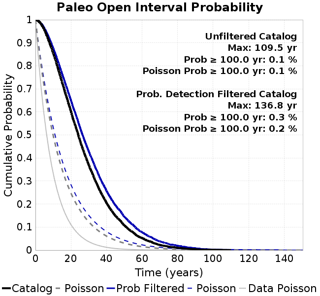 |
|---|
Open interval probabilities table:
| Open Interval (yr) | Catalog Probability | Catalog Poisson Probability | Prob. Filtered Catalog Probability | Prob. Filtered Catalog Poisson Probability | Data Poisson Probability |
|---|---|---|---|---|---|
| 10.00 | 0.85405135 | 0.4968271 | 0.87580526 | 0.53248745 | 0.33238843 |
| 20.00 | 0.60188556 | 0.24683717 | 0.64996564 | 0.2835429 | 0.110482074 |
| 30.00 | 0.37000018 | 0.122635394 | 0.42891085 | 0.15098305 | 0.036722966 |
| 40.00 | 0.20476927 | 0.06092859 | 0.25703448 | 0.080396585 | 0.012206289 |
| 50.00 | 0.10737071 | 0.030270975 | 0.14544848 | 0.04281017 | 0.004057229 |
| 60.00 | 0.052721605 | 0.01503944 | 0.07826739 | 0.022795882 | 0.001348576 |
| 70.00 | 0.022845736 | 0.0074720015 | 0.038364593 | 0.012138521 | 4.4825108E-4 |
| 80.00 | 0.010099615 | 0.003712293 | 0.01904741 | 0.0064636106 | 1.4899348E-4 |
| 90.00 | 0.0040241233 | 0.0018443677 | 0.00852156 | 0.0034417917 | 4.952371E-5 |
| 100.00 | 0.0012463186 | 9.163319E-4 | 0.0029641176 | 0.0018327109 | 1.6461108E-5 |
| 110.00 | 0.0 | 4.552585E-4 | 0.0012566162 | 9.758956E-4 | 5.4714824E-6 |
| 120.00 | 0.0 | 2.2618477E-4 | 5.383288E-4 | 5.196522E-4 | 1.8186574E-6 |
| 130.00 | 0.0 | 1.1237472E-4 | 2.303705E-4 | 2.7670828E-4 | 6.045007E-7 |
| 140.00 | 0.0 | 5.583081E-5 | 0.0 | 1.473437E-4 | 2.0092905E-7 |
We first create a tapered moment release time series for the entire catalog. Each event's moment is distributed across a 25 year Hanning (cosine) taper. Here is a plot of a random 2,000 year section of this time series:

We then compute Welch's power spectral density estimate on the entire time series. Results are plotted below, with a Poisson randomization of the catalog also plotted in gray as a control. Significant deviations above the Poisson model indicate synchronization at that period.

A_1 = 0.001
fA = .1
B_1 = 0.008
muSlipAmp_1 = .0
muSlipInvDist_1 = 1.0
cohesion = 0.0
Dc_1 = 1.0000000000000000818e-05
mu0_1 = 0.6
ddotStar_1 = 9.9999999999999995475e-07
ddotAB_1 = 9.9999999999999995475e-07
alpha_1 = 0.0
theta0_1 = 200000000
tau0_1 = 55.1
sigma0_1 = 100
sigmaFracPin = .5
lowSigmaAction = 1
maxThetaPin = 1.0e13
ddotEQ_1 = 1
ddotEQFname =
stressOvershootFactor = 0.05
lameLambda = 30000
lameMu = 30000
slowSlip_1 = 0
nEq = 100000000000
KZeroFrac = 0
muPin = 1.0
tStart = 0
maxT = 3.16e13
maxWallTime = 169200
maxTrans = 1.0000000000000000159e100
faultFname = UCERF3FM.15km.1km.tri.flt
outFnameInfix = overS0_05
writeTau = 2
writeSigma = 2
writeSlip = 0
writeSlipSpeed = 0
writeState = 0
writeTheta = 2
writePED = 1
writeTransitions = 1
minDtWrite = 0
minDtWriteCoseismic = 0
minDtWriteInterseismic = 0
minMagWrite = 7.7
writeStiffness = 0
stressRateSpecification = 1
dMu3 = 0.01000000000000000
initTauFname =
initSigmaFname =
initThetaFname =
initSlipSpeedFname =
AFname =
BFname =
DcFname =
mu0Fname =
ddotStarFname =
ddotABFname =
alphaFname =
KTauFname = /u/sciteam/gilchris/scratch/stiffness_25a589d/Ktau.25a589d.out
KSigmaFname = /u/sciteam/gilchris/scratch/stiffness_25a589d/Ksigma.25a589d.out
tFailFname =
tauFailFname =
tauDotFname =
sigmaDotFname =
KZeroFname = UCERF3FM.15km.1km.tri.KZero
pinnedFname = UCERF3FM.15km.1km.tri.pin
neighborFname = UCERF3FM.15km.1km.tri.neighbors
stressRateFname =
slowSlipFname =
writePatchFname =
DEBUG = 0
ZBrentUpperBracket = 0
receiverElementAreaFrac = 0.8
receiverElementIntTol = 1.0e-4
receiverElementSubdivisionMax = 4
tgfDist1 = 3
tgfDist1 = 10
lowSigmaAction = 1
highSigmaAction = 0